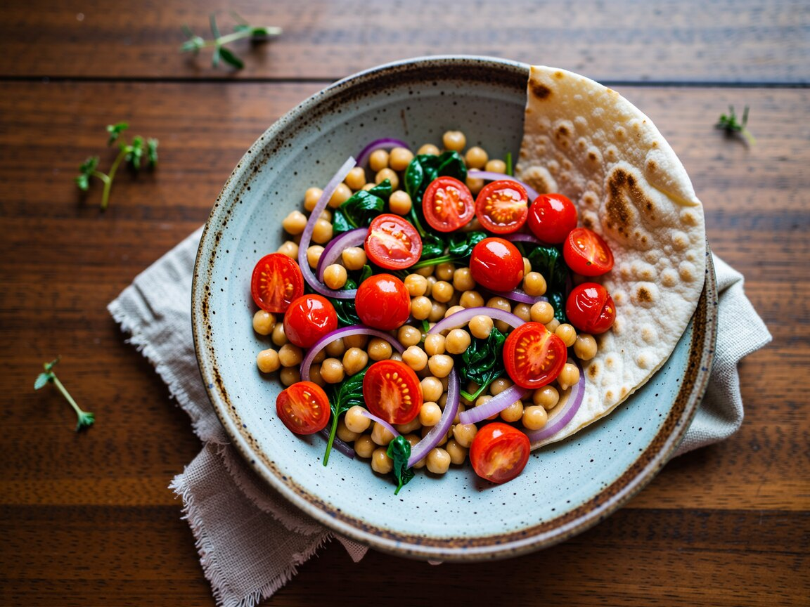

Kichererbsen-Spinat-Pfanne mit Tomaten
Alles aus einer Pfanne, mit Brot zum Tunken.
Zutaten
- 1 Dose Kichererbsen
- 250 g Kirschtomaten
- 150 g Babyspinat
- 1 rote Zwiebel
- 2 Knoblauchzehen
- 1 TL Paprika edelsüß
- 1 TL Kreuzkümmel
- 2 EL Olivenöl
- 1 Zitrone
- Fladenbrot
- Salz, Pfeffer
So geht's
- Kichererbsen abgießen und abtropfen lassen.
- Zwiebel in Spalten schneiden und im Öl 3 Minuten braten, Knoblauch, Paprika und Kreuzkümmel dazu.
- Kichererbsen und halbierte Tomaten 6 Minuten mitbraten, bis die Tomaten aufplatzen.
- Spinat zusammenfallen lassen, mit Zitrone, Salz und Pfeffer abschmecken.
Den Rest in ein Fladenbrot rollen, mit einem Klecks veganem Joghurt: das perfekte Mittagessen im Zug.